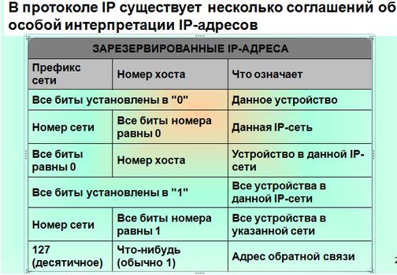

Широковещательный адрес:
Сетевая часть, относящаяся к адресации хоста представлена отсутствием нулевых двоичных разрядов.
Пример: 192.168.0.255
Используется, к примеру, для ARP-запросов
Ограниченный широковещательный адрес:
Весь адрес характеризуется отсутсвием нулевых значений в разрядах
Пример: 255.255.255.255
Используется, к примеру, для обращения к DHCP-серверу
Другие специальные IP-адреса на рисунке:
